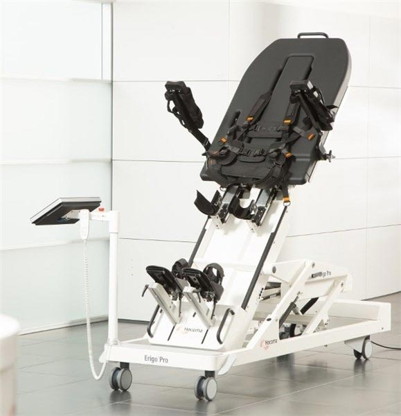

Высокий уровень медицины
Отделение реабилитации — это расположенный на западе Модмосковья высокотехнологичный медицинский комплекс, Наши врачи явяляются самыми квалифицированными специалистами, имеющие многолетний опыт работы. Учреждение оснащено современным медицинским оборудованием, разработаны авторские диагностические и лечебные реабилитационные методики, которые отличают его от других центров реабилитации.
Своевременно проведенная профессиональная реабилитация обеспечивает восстановление здоровья после перенесенных заболеваний и травм, а также является профилактикой обострения хронических болезней, тем самым улучшая качество жизни.
Наши подразделения
- Подробнее
Неврология
Диагностика головного мозга и лечение у пациентов всех возрастов во всех случаях.
- Подробнее
травматология и ортопедия
Воссатновление после травм и болезней
- Подробнее
кардиология
Cамые современные инструменты для диагностики и лечения заболевания.
 Подробнее
Подробнеесоматические заболевания
Диагностика дыхательных путей
Почему мы
Опытные Врачи
Врачи постоянно совершенствуются в своей специальности, несмотря на богатый опыт работы.
Душевная атмосфера
Уютная обстановка и отзывчивый персонал сделают поход к стоматологу максимально приятным.
Совмененный комплекс
тренажерный зал, бассейн и сауна, программы для здоровья
Индивидуальный подход
Профессиональная психотерапия. Индивидуальный подход к каждому клиенту.
Великолепная команда специалистов

Всеволод Лавров
Заведующий
Всеволод Лавров
Заведующий
Всеволод Лавров
Заведующий
Великолепная команда специалистов
Смотреть всехЗаведующий отделением Всеволод Лавров
10 лет опыта работы +1 (409) 987–5874Я психолог, специализирующийся на индивидуальной и семейной психотерапии, а также в других областях психологии.
Современное оборудование
У нас есть новейшее оборудование, как для самых тяжелых пациентов, так и для тех, кто хочет оставаться в хорошей физической форме!
- 
Erigo Pro стол-вертикализатор
Cтол-вертикализатор с интегрированным роботизированным ортопедическим устройством и синхронизированной функциональной электростимуляцией мышц нижних конечностей, позволяющий максимально быстро и без осложнений вернуться в вертикальное положение людям, длительно прикованным к постели
Экзоскелет Exoatlet
чтобы снова почувствовать возможность самостоятельно ходить.
Реабилитационный комплексы Amadeo, Armeo
Роботизированные реабилитационный комплексы для восстановления функций конечностей: Amadeo, Armeo, Gloreha, Hand Tutor, пассивно-активно помогают вернуть утраченные движения в пальцах, кисти, локтевом и плечевом суставах.
- 0 Сотрудников
- 0 лет опыта
- 0 Cчастливых клиентов
- 0 Современных тренажоров